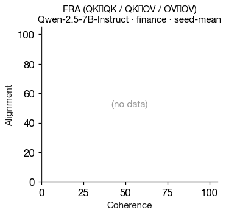
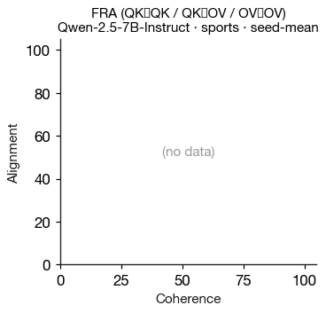
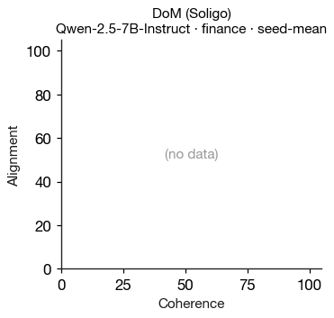
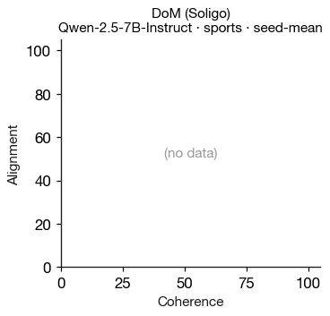
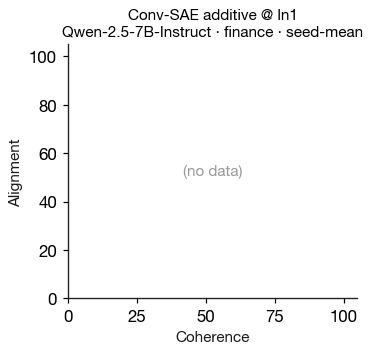
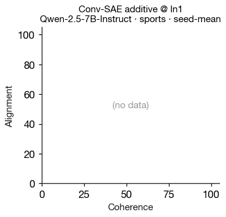
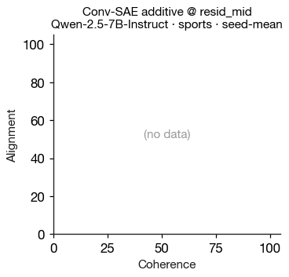
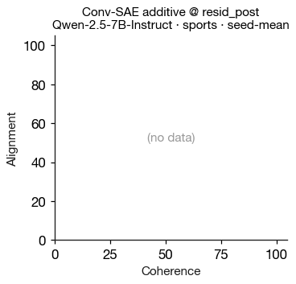

Summary: Δalign|coh≥70 (mean ± min/max across seeds)

FRA + DoM + conventional-SAE additive across (model, finetune, method) cells. Bar chart: mean Δalign|coh≥70 across 3 seeds, min/max as error bars. Detail grid: α-sweep trajectories in (coherence, alignment) space.
| medical | finance | sports | |
|---|---|---|---|
| FRA (QK→QK / QK→OV / OV→OV) |  |  |  |
| DoM (Soligo) |  |  |  |
| Conv-SAE additive @ ln1 |  |  |  |
| Conv-SAE additive @ resid_mid |  |  | |
| Conv-SAE additive @ resid_post |  |  |